sich verändert mit und ohne aktivierter Option Skalierungsfehler mit Quadrat (Reduziertes Chi-Qdr.). Zur Vereinfachung nehmen wir an, dass der Fehlerbalken
sich verändert mit und ohne aktivierter Option Skalierungsfehler mit Quadrat (Reduziertes Chi-Qdr.). Zur Vereinfachung nehmen wir an, dass der Fehlerbalken Letztes Update: 16.01.2025
Um die Kompatibilität des Standardfehlers (SE) des angepassten Parameters und die verbundenen Ergebnisse mit anderer Software zu bewahren, ist das Kontrollkästchen Skalierungsfehler mit Quadrat (Reduziertes Chi-Qdr.) standardmäßig aktiviert. Ist dieses Kontrollkästchen aktiviert, bleibt der Standardfehler des Parameter gleich, sogar wenn die Fehlerbalken sich beträchtlich verändert. Wir empfehlen, diese Option zu deaktivieren, wenn Daten mit instrumenteller oder direkter Gewichtung bzw. einem beliebigen Datensatz angepasst werden, so dass der Standardfehler des Parameters den Betrag der Gewichtung wiedergeben kann.
Sie finden das Kontrollkästchen Skalierungsfehler mit Quadrat (Reduziertes Chi-Qdr.) auf der
| Hinweis: Dieses Kontrollkästchen hat NUR Einfluss auf den Standardfehler der angepassten Parameter. Es hat KEINEN Einfluss auf den Anpassungsprozess oder die Parameterwerte. |
Wir erörtern unten, wie der Standarfehler des j-ten angepassten Parameter sich verändert mit und ohne aktivierter Option Skalierungsfehler mit Quadrat (Reduziertes Chi-Qdr.). Zur Vereinfachung nehmen wir an, dass der Fehlerbalken
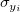
durch die Multiplikation mit einer Konstanten k skaliert wird. Einzelheiten zu Algorithmus und Erklärung finden Sie unter Theorie der nichtlinearen Kurvenanpassung.Wenn Skalierungsfehler mit Quadrat (Reduziertes Chi-Qdr.) standardmäßig aktiviert ist, hängt die Varianz-Kovarianz-Matrix  für Parameter
für Parameter
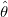
von und
und  ab.
ab.
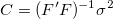 |
(1) |
|---|
Wobei  die partielle Ableitungsmatrix ist, deren Element in der i-ten Zeile und der j-ten Spalte folgendermaßen lautet:
die partielle Ableitungsmatrix ist, deren Element in der i-ten Zeile und der j-ten Spalte folgendermaßen lautet:
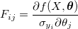 |
(2) |
|---|
und ist die mittlere Residuenvarianz, die mittels des reduzierten Chi-Quadrats geschätzt wird:
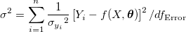 |
(3) |
|---|
Der SE von ist dann die Quadratwurzel eines diagonalen Hauptwerts der Matrix
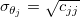 |
(4) |
|---|
Wenn die Fehlerbalken mit einer Konstanten k und sowohl als auch mit einem Faktor  geändert werden, dann hebt k sie jeweils in der Berechnung des Standardfehlers auf. Daher bleibt der Standardfehler unverändert, wenn der Fehlerbalken skaliert wird.
geändert werden, dann hebt k sie jeweils in der Berechnung des Standardfehlers auf. Daher bleibt der Standardfehler unverändert, wenn der Fehlerbalken skaliert wird.
Wenn Skalierungsfehler mit Quadrat (Reduziertes Chi-Qdr.) deaktiviert ist, wodurch beim Berechnen der Varianz-Kovarianz-Matrix ausgeschlossen ist, hängt die Matrix nur von ^{-1}") ab.
ab.
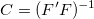 |
(5) |
|---|
Der Standardfehler SE wird jetzt
 |
(6) |
|---|
Wenn die Fehlerbalken mit k multipliziert werden, wird der SE auch mal k sein.
Nach Anpassen der Modelle verwenden wir das reduzierte Chi-Quadrat, um zu prüfen, ob die Gewichtungen den realen Y-Fehler darstellen können oder nicht. Zusammengefasst: Wenn Sie herausfinden, dass der Standardfehler des Parameters bei Aktivierung bzw. Deaktivierung des Kontrollkästchens Skalierungsfehler mit Quadrat (Reduziertes Chi-Qdr.) sich sehr unterscheidet, bedeutet dies, dass die Gewichtungen möglicherweise nicht die realen Y-Fehler darstellen. Weitere Informationen finden Sie auf dieser Seite.
Unten befindet sich ein kurzes Beispiel, das belegt, dass Skalierungsfehler mit Quadrat (Reduziertes Chi-Qdr.) nur den Standardfehler der angepassten Parameter beeinflusst.
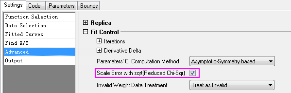
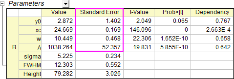
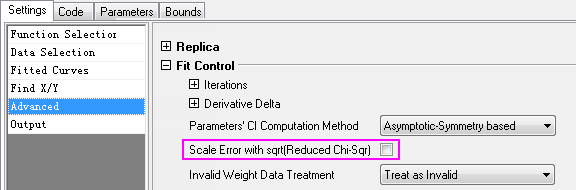
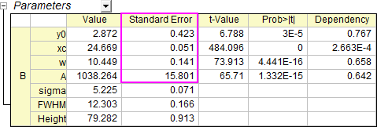
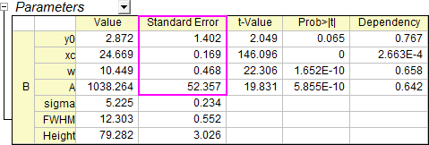
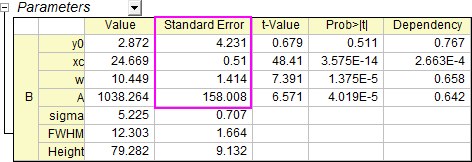
| X | Y | Y-Fehler |
|---|---|---|
| 11 | 5 | 0.4472 |
| 13 | 10 | 0.6324 |
| 15 | 19 | 0.8718 |
| 17 | 27 | 1.0392 |
| 19 | 49 | 1.4 |
| 21 | 65 | 1.6124 |
| 23 | 77 | 1.755 |
| 25 | 80 | 1.7888 |
| 27 | 77 | 1.755 |
| 29 | 59 | 1.5362 |
| 31 | 44 | 1.3266 |
| 33 | 24 | 0.9798 |
| 35 | 11 | 0.6634 |
| 37 | 14 | 0.7484 |
| 39 | 4 | 0.4 |
Schlüsselwörter:Anpassen, Standardfehler, reduziertes Chi-Quadrat, Fehlervarianz